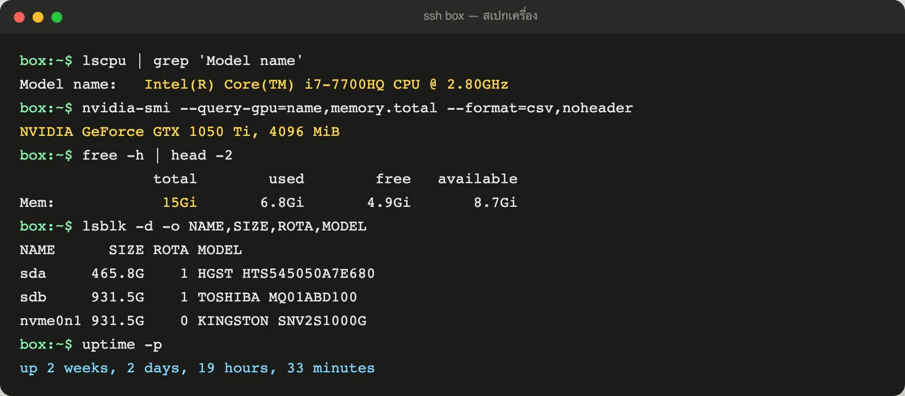
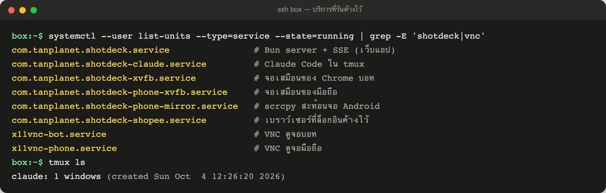
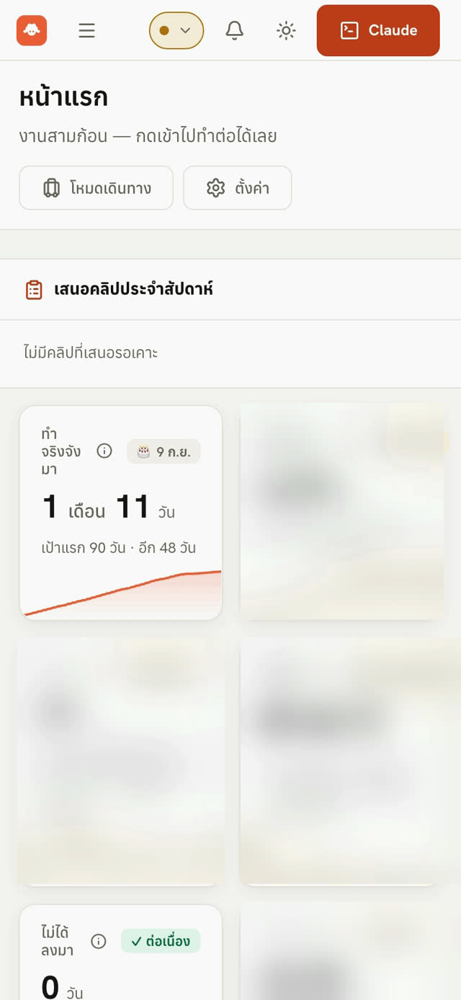
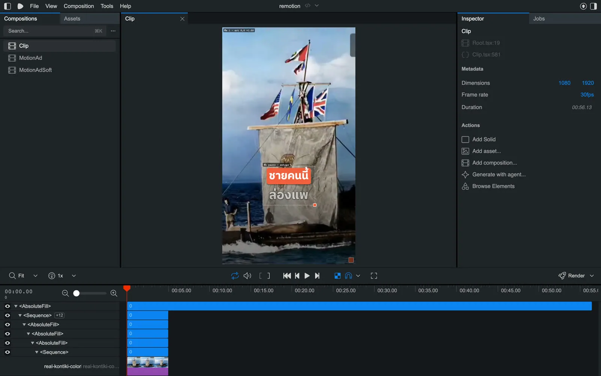
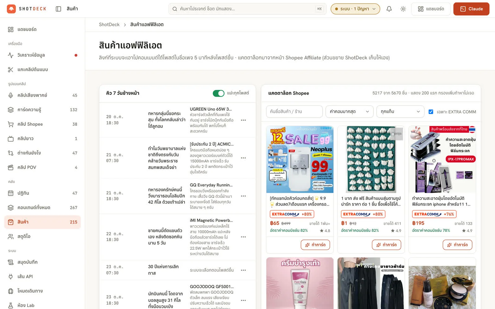
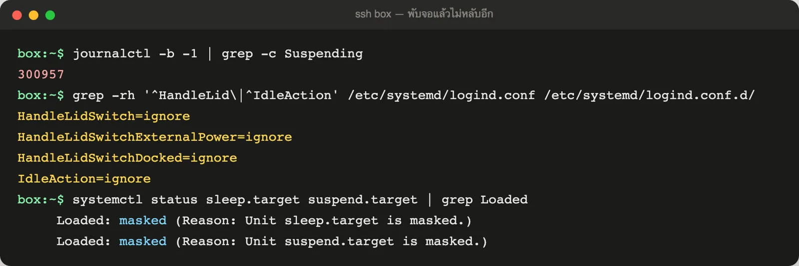
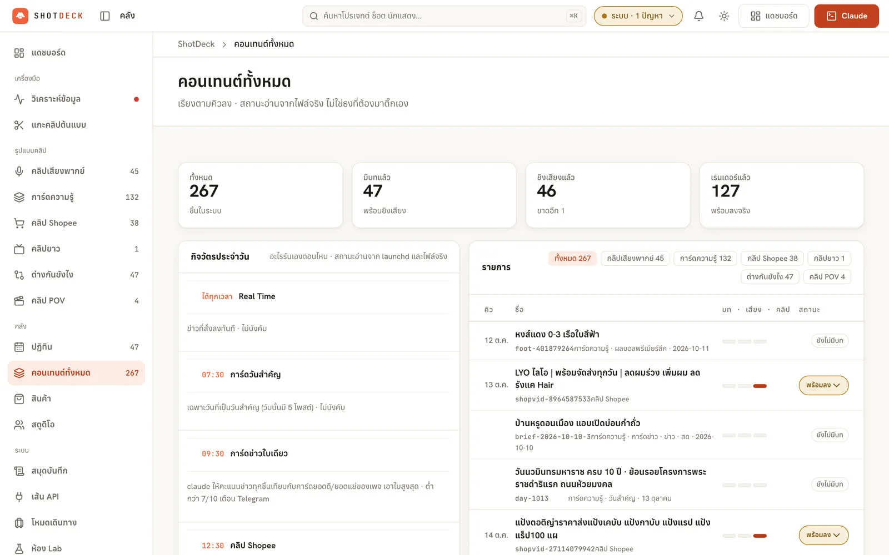

shotdeck-box — a used laptop that cuts and posts clips overnight
One old laptop that leaves me with only the editing. Voiceover, rendering, checks, posting, comment replies and self-repair carry on by themselves while I sleep or travel.

A 2017 laptop sits at home in Bangkok, always on. It makes short clips, renders them, checks them, and posts to 5 platforms on its own schedule. I can give it orders from my phone anywhere, and travel without the work stopping.
Most of clip work isn't editing
One short sales clip comes with a dozen surrounding tasks, and many of them have to happen at 3 a.m.

I only want to be in the editing step. The system handles the rest: voiceover, rendering, checks, scheduling, posting, replying to comments, and a summary to read in the morning.
Everything was tied to my work Mac
Before the move, 12 scheduled jobs ran on the Mac. Close the lid or take it out of the house, and the night jobs didn't happen.
Jobs that run while nobody is awake
Product clips at 3 a.m., backups at 4 a.m., comment replies at 11:30 p.m. If something broke halfway, nobody saw it until morning.
No control once I left the house
I wanted to travel without the channels going quiet, but everything lived on a machine at home, and opening ports straight to the internet isn't safe.
Posting to 5 platforms by hand, every day
Each one uploads differently, some only accept posts from a phone, and links have to go in a pinned comment. Doing it by hand every day is slow and easy to get wrong.
A dedicated machine at home beats renting cloud and beats keeping the Mac awake
The real constraints: it needs a GPU, a browser that stays logged in, and a port for a real Android phone.

| Option | What you get | Cost | Why rejected / chosen |
|---|---|---|---|
| Rent a cloud VPS | Always on, no hardware to maintain | Monthly | GPU machines cost too much for this job, and you can't plug in a real Android phone over USB to post |
| Keep the Mac awake | Nothing new to set up | None | The Mac is my work machine and leaves the house, so night jobs depended on whether it was home that day |
| A used laptop as a home server Chosen | GPU, several disks, phone plugs in | One-time purchase | An i7-7700HQ, 16GB RAM and GTX 1050 Ti are enough for rendering and transcription. It can stay on at home all day, and the Mac goes back to being just a work machine |
All work happens on this machine over ssh. No editing a copy on the Mac and pushing it up later. With two copies of the code, sooner or later you lose track of which one is real. On Sep 29 I moved the 12 jobs off the Mac, and on Oct 6 the other always-on services followed, such as the backend for the ESP32 display on my desk, so the Mac could actually sleep.
One machine, four layers
The top layer is where I give orders, the bottom is where the files live. Every layer talks over a private network, with no ports open straight to the internet.

Control from anywhere without exposing the machine
Tailscale is the backbone, and SSH accepts keys only. The rest is screens designed to actually work on a phone.


- Type
boxon the Mac to ssh into a tmux session where Claude Code is waiting. Close the window and come back later; nothing is lost. - A web app for iPhone A Bun server pushes live status over SSE. Bottom sheets instead of stacked windows, usable with one thumb, reachable only on the private network.
- A web terminal ttyd connects to the tmux where Claude runs, so when I'm out I can type plain-language instructions from my phone.
- A hidden virtual display The bot's Chrome runs logged in on Xvfb, because platforms detect headless mode. When I want to see what it's doing, I open it over VNC.
- View-only Android screen scrcpy mirrors the phone so I can check how far a mobile post has got, without accidentally tapping anything.
- Only one public entry point Tailscale Funnel exposes a single HTTPS endpoint guarded by a key, because some devices, like the ESP32 display, aren't on the private network.
Voiceover clips — I edit, the machine does the rest
Clips with a voiceover still need a person to decide on the visuals. I do that part; every step after it runs by itself through to posting.

Write the script, drop the footage on the Mac
Files sync to the box with rsync, no uploading through a web page
Thai voiceover line by line, then transcribed back to check
faster-whisper large-v3 on the GPU transcribes it for comparison with the script, a pronunciation dictionary fixes readings, and every line is leveled to −16 LUFS
Lay out in Remotion Studio
Preview only; nothing renders until I say it's good
Render
A ~73-second clip takes about 8 minutes. Upgrading Remotion made renders 15–21% faster
Check before release
preflight checks the file, audio and dimensions before it enters the queue
Schedule and post automatically
Fixed slots: 18:30 on weekdays, 12:30 on weekends
Product clips — no human touch from start to post
These clips have no voiceover, so people can be removed entirely, with automated checks instead of human eyes.

Pick products
Ranked from an affiliate catalog of about 2,450 items
Remove the product photo background
rembg cuts out just the product
AI draws the scene
Uses the weekly quota of a plan I already pay for, no extra API cost
Rotate clip formulas
Cycles through 5 formulas so the feed doesn't look the same every day, assembled from Remotion templates
Automated motion checks
Detects flicker and checks that text stays inside each platform's safe area
Post without waiting for approval
Pass the checks and it posts; fail and it doesn't
A day in the machine's life
Every job is its own systemd user timer, so one failure doesn't drag the others down

Posting to 5 platforms, each a different way
Not the slickest method, but the one each platform doesn't penalize.

- Facebook Reels via the API or the browser post composer; Instagram uses the composer only
- YouTube Shorts through the browser Not the API, because clips uploaded by an app that hasn't passed audit get locked to private
- TikTok and Shopee Video through a real Android phone Driven by adb over a powered USB hub, so the phone doesn't run out of battery overnight
- Affiliate links go in the pinned first comment never in the post itself
- Several guards against double posts Before trying a fallback, the system opens the real page to see whether the clip is already up, instead of trusting the status it remembers
Three layers of self-repair before it wakes me
When I'm away, every alert means stopping my trip, so alerts reach me as late as possible.

Problems I hit with the real thing running
Almost none of these happen on a Mac, and nobody warned me about them.

The BIOS refused almost every USB stick, and after installing it showed No Bootable Device
Flash drives written the usual way didn't show up in the boot menu. Once the install did go through, the machine couldn't find the new system on reboot.
Closing the lid put it in a sleep-wake loop, leaving 300,000 "Suspending…" lines in the log
Laptops are set to sleep when the lid closes, so a machine meant to stay on kept trying to sleep all night.
The first night 5 of 6 posts failed because select-all used the wrong OS shortcut
The script was written on a Mac and cleared text fields with Meta+A. On Linux that doesn't select all, so old text stayed in the field.
ControlOrMeta+A so it uses the right key for whichever OS it runs on. The same script now runs on both machines.rembg used 8.9 GB of memory and crashed the pre-dawn jobs
It reloaded the model for every image. With 16GB of RAM, nothing was left for the jobs running alongside it.
Platforms detected headless Chrome
A browser without a real display leaves different traces from a normal user, so posting through the website failed.
Tailscale Funnel didn't send the header that marks a request as coming through Funnel
The public endpoint was meant to check that requests came through Funnel, but that header never reached the server.
The GPU sat idle for days after the move
I chose a machine with a graphics card, but the early jobs only used the CPU, so the card was paid for and unused.
The numbers that show it's worth it
115 clips in the first 3 weeks: 38 automated product clips, 21 voiceover clips, 42 still/info cards and 14 comparison clips

Lines I chose not to cross
A system that runs all night unwatched needs lines it won't cross on its own.

- No automatic Remotion upgrades Every Monday it summarizes what's in the new version, and I decide when to upgrade, because every template depends on it
- Voiceover clips don't render until I say so Remotion Studio is for previews. A render ties up the machine for almost 10 minutes and shouldn't be spent on a clip that isn't approved
- No links in the post body Links go only in the pinned first comment
- No APIs that get clips locked YouTube posts go through the browser instead, even though it needs more upkeep
- Claude gets at most 6 repair attempts a day The cap stops it looping on the same problem all night; past that, a person decides
- No editing copies on the Mac Everything is edited on the real machine over ssh; there is only one real copy